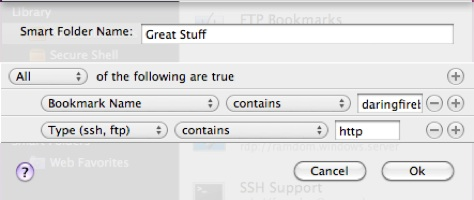

Smart Folders are created either by choosing “File” and then “New Smart Folder...”, or by using the keyboard combination “Option-⌘-N”



Choosing this menu option, or pressing the keyboard combination, will present the screen above. Using this form, you can construct complex rule sets to help organize your bookmarks.
If you find that you do not need the Smart Folder, it can be deleted by selecting the smart folder, right clicking, and choosing “Delete”. Go2 does not currently support undeleting Smart Folders, so you will be asked to confirm the deletion.
If you would like to make a change to the Smart Folder rule, right click and select “Edit Smart Folder”. This will bring up the screen above with your rule ready to be edited.
For more detailed help, please email support@farmdog.co